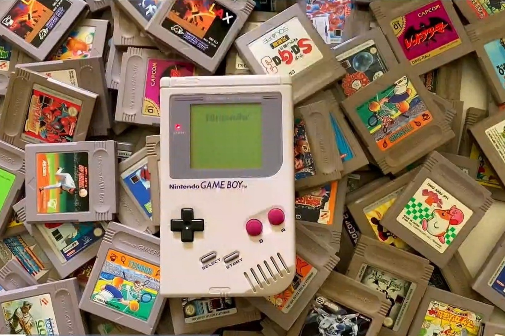

Numerique.Game
GAME BOX
En 1989,
Nintendo
sort la Game Boy, premier grand succès commercial pour une console qui soit à la fois portable, et multi jeux. Une console portable de jeu vidéo 8-bits de quatrième génération développée

DESCRIPTION :
Fabriquer par
Nintendo
Date de sortie : JAP : 21 avril 1989 AN : 31 juillet 1989 EUR : 28 septembre 1990 BRA : 14 avril 1991
Jeu le plus vendu
Tetrix
35 millions
Retour à l'accueil